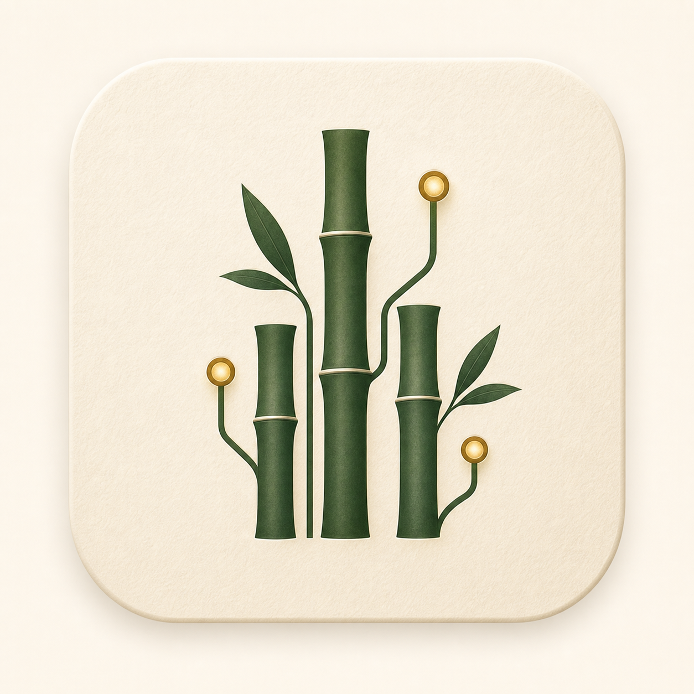

Maya is mid-run on the Penang workbook — one approval is waiting. Quiet mode off · autonomy auto_safe.
Resolve in the strip above, or type yes / no in chat. One action surface only.
| last route | lane | reason | cost | when | |
|---|---|---|---|---|---|
| travel_budget_workbook | The Mind | explicit /complex | flagged | 21:14:02 | › |
| review_workbook | The Steward | quality gate | normal | 21:14:48 | › |
| photo_describe | The Sight | photo + caption | normal | 19:02:11 | › |
Read-only — badges are states, not buttons. Decisions resolve in chat or the strip above.
Create penang-budget-v2.xlsx in the Maya workspace. Side-effect local-file · replay-safe · snapshot taken, rollback armed.
/complex serious run/memory inspectnew topic reset windowMalay or Manglish pun boleh| morning_briefing | delivered · spoken + text | 06:30 |
| memory_watchdog | 8 canaries clean · no audit silence | 20:30 |
| retention_cleanup | 1 warning issued (router-lab) | 03:00 |
| weekly_memory | reviewer fallback · conservative save | Sun 20:03 |
Tier-1 alerts (hard-blocks, canary trips, spend threshold) are never suppressed — they reach Telegram even in quiet mode.
| subject key | class | reinforced | preview | |
|---|---|---|---|---|
| office_artifact_quality | pinned | 31 | quality gates run during creation by default | unpineditforget |
| latest_document_preference | active | 17 | follow-up edits target the latest file | pineditforget |
| telegram_reply_style | active | 9 | no dash symbol, answer first | pineditforget |
| penang_trip_window | session | 2 | 4D3N, 3 pax, late June | pineditforget |
| telegram_test_drink | forgotten | — | not saved · derived traces removed |
Saves go through write + read-back verification before Maya says "saved". Edits rewrite the canonical row; forget also clears every derived trace.
| canonical_recall | latest_document_preference | 21:14:08 |
| activation | penang_trip_window → prompt | 21:14:09 |
| leak_check | 8 canaries · 0 leaks | 20:30:00 |
| weekly_reject | "Maya prefers..." overreach guard | Sun 20:03 |
| canonical_forget | telegram_test_drink + derived | Jun 09 |
Profile is near the 80% heal threshold. /selfheal dryrun is prepared — snapshot first, rollback recorded.
Clean takeaways only — run rows, provider counts, and IDs live in the audit view.
Only Maya's records expire. Local folders and files are never deleted.
Failed attempts stay internal. "Send me the rough" attaches it, labeled as a draft.
Click a change to comment — comments become edit requests Maya applies to the file.
| openability | pass |
| species fit | pass |
| est / actual / variance | pass |
| formula integrity | pass |
| Steward review | approved |
| repair attempts | 0 / 3 |
If QA fails after the retry cap, Maya says "draft with issues" and names the issue. Never silently final.
34 CI checks, 25/25 evals, 11,200 replay cases. Code paths proven, no provider spend.
Browser nights 95–96.7% with 10/10 safety stops. Telegram 200-case run clean.
Long-work voice on iMac, Omi sync, Mudra beyond hotkeys, physical print boundary.
7-day soak at 1/7 days. 30-day scorecard at 1/30. Real elapsed time cannot be simulated.